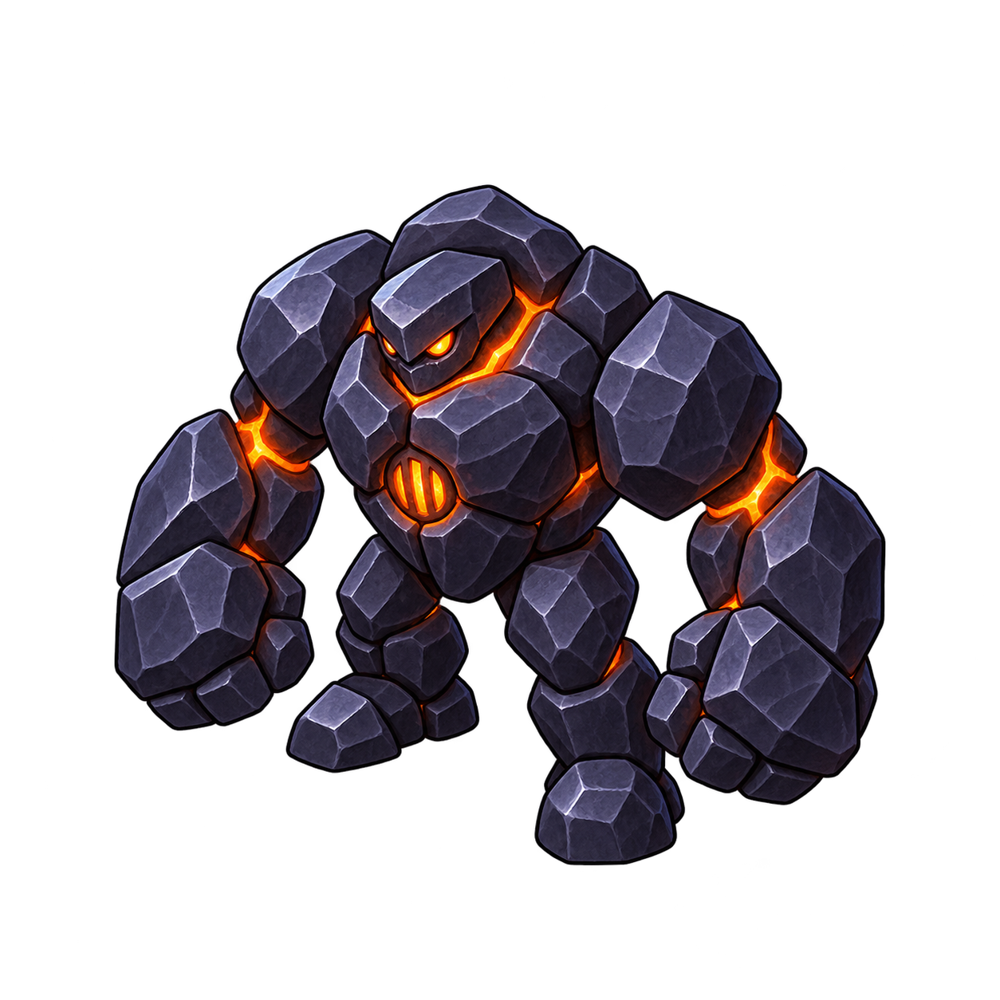
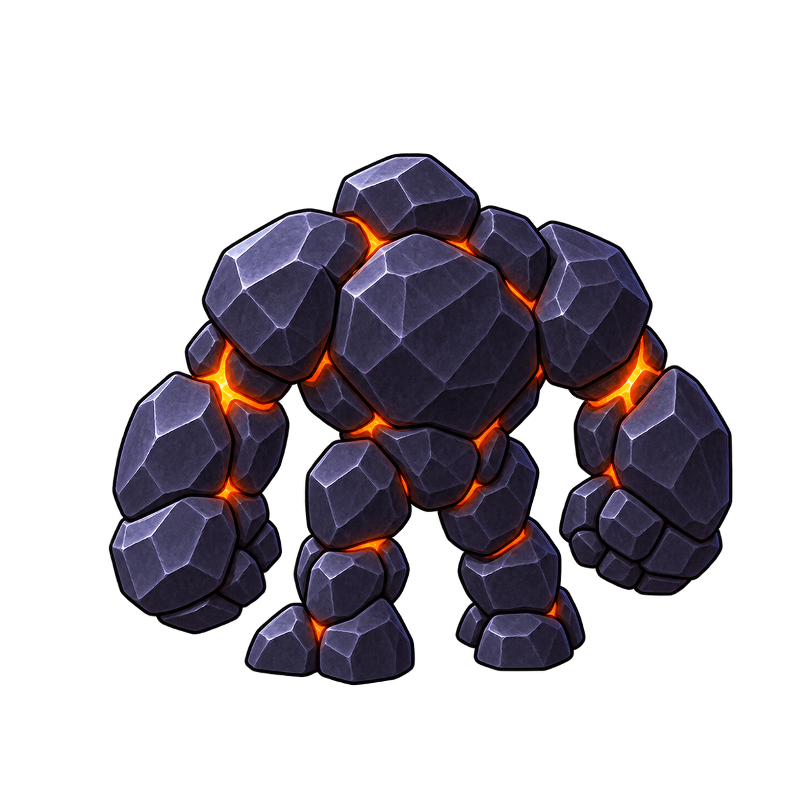
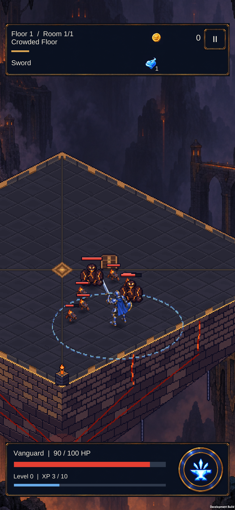

Weight, without the noise.
Slag Brute: a compact furnace-born brawler. Broad cold stone, heavy fists and a restrained molten core keep it distinct from the small, bright Cinder Mite.
One creature, two views
A low head and wide shoulders carry its weight.
{kind=link}

Front / furnace vent{kind=link}

Rear / cooled back platesHeavy, not tall
Two separated feet and oversized fists create a brawler silhouette. No flame crown competes with the Mite.
Heat stays inside
A small chest vent and a few hot joints preserve the foundry identity while keeping the body quiet.
Detail views are enlarged. These independent masters still need shared pivot registration and pose cleanup before animation.
Ten-enemy readability study
Two Brutes, eight Mites and one Vanguard body.
1080-pixel source crop, fitted to this panel. A schematic floor and illustrative contact shadows; no movement, collision, combat, HUD or Unity rendering is simulated.
The roster at one scale
Blue steel leads. Heavy stone anchors. Small flames swarm.
At a width-9 camera, 1080 / 9 = 120 pixels per world unit. Target visible heights: Vanguard 165 px, Brute 112.5 px, Mite 60 px. Master bounds are normalized independently; these are design targets, not measured runtime sprite bounds.
Compare against the installed art
{kind=link}

Previous S23 capture from the contact/grip pass. It contains the older procedural Grunts. The new masters above have not replaced them.
Next production step
Register the feet; make front/rear walk contacts and a readable windup/strike; then test reduced imports, cached ownership and hit/death in the real room and on the phone.
The back view is more square-on than the front. Its facing and shoulder proportions need another pass when making the registered poses.